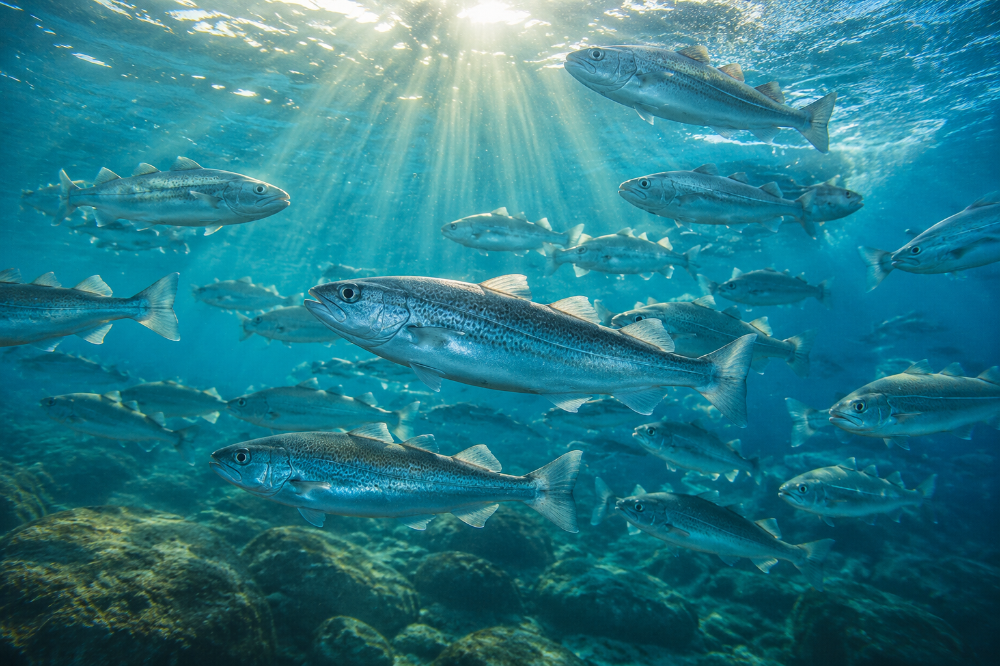
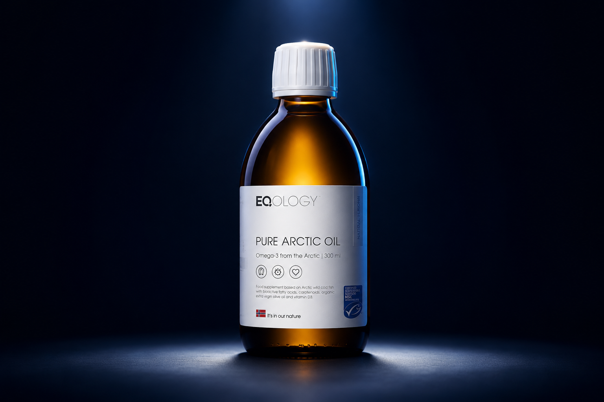

Analyses empiriques et conseils pratiques pour nourrir votre expertise en naturopathie.
Les mécanismes par lesquels les oméga-3 soutiennent les fonctions cognitives.

Comment vérifier la qualité d'un oméga-3 : Totox, certifications et traçabilité.
Le test oméga-3 comme outil de diagnostic et de fidélisation en cabinet.
Comment proposer une solution adaptée à chaque conviction alimentaire.
Le rôle de la lutéine, de la vitamine A et du DHA dans la protection visuelle.

Le modèle EQOLOGY : de 6 000 euros la première année à 27 000 euros en cinq ans.